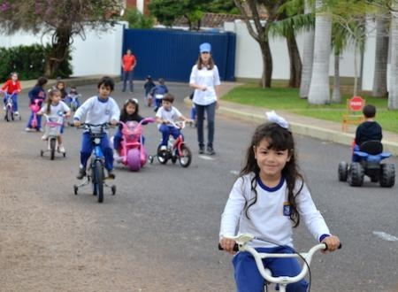

Nivel Inicial: Nuestros alumnos de 2 a 5 años, desarrollan habilidades de
conceptualización visual y auditiva mediante la inmersión total en inglés para la adquisición de la lengua,
al mismo tiempo que adquieren la
lengua castellana y ejercitan la capacidad de comunicarse eficazmente, desarrollando la capacidad de internalizar contenidos y
desarrollo de las
habilidades motrices. Por lo cual, a través de diferentes estrategias lingüísticas, el alumno adquiere conocimientos y vocabulario que optimizan el desarrollo del
lenguaje y su capacidad de aprendizaje.
|
 |